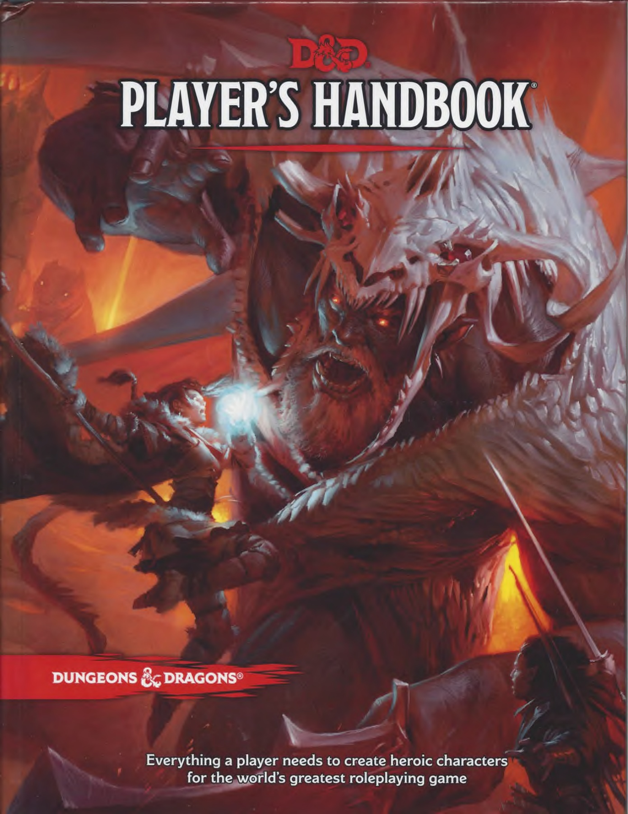
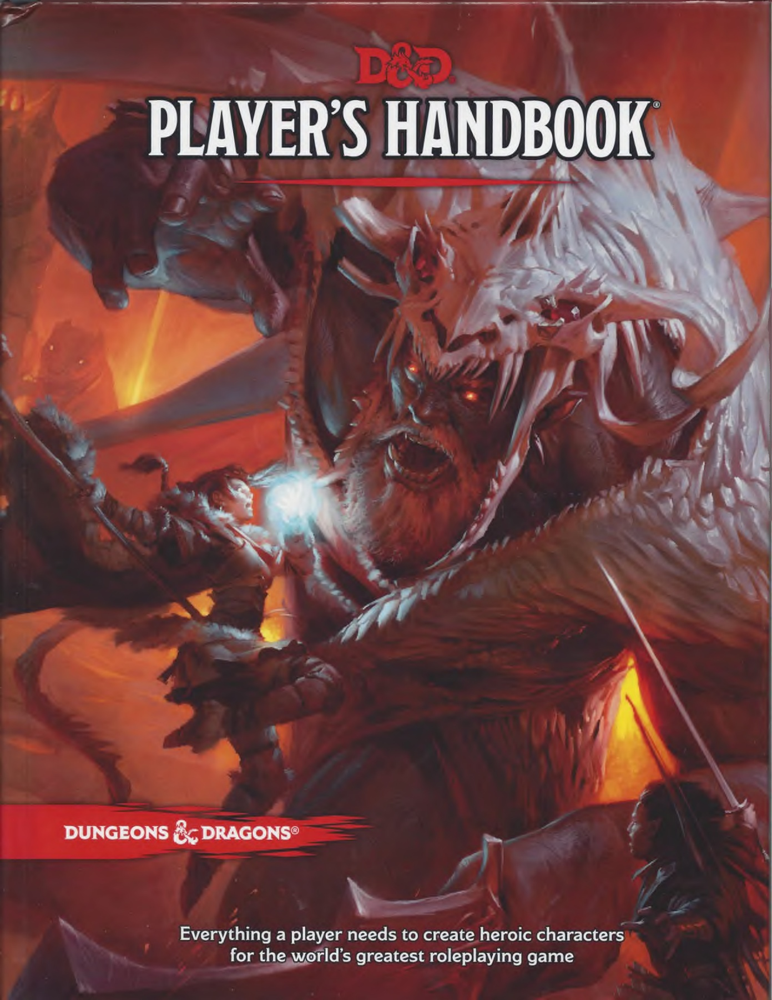

Icónica portada del set básico (1983)

Portada del Manual de Jugador de la 5ª Edición (2014)
Dragones y Mazmorras es un juego de rol diseñado en los años 70 por Gary Gygax y Dave Arneson
Desde su primera edición en 1974 hasta el dia de hoy, el juego no ha dejado de conseguir adeptos, a pesar de las durísimas campañas de desprestigio que ha sufrido, sobre todo en la década de los 80 durante el llamado Satanic Panic
A dia de hoy, gracias a plataformas de distribución de contenido online como YouTube o Twitch y a las redes sociales que logran conectar a personas con los mismos gustos a nivel mundial, Dragones y Mazmorras está viviendo una nueva época dorada
Icónica portada del set básico (1983)

Portada del Manual de Jugador de la 5ª Edición (2014)